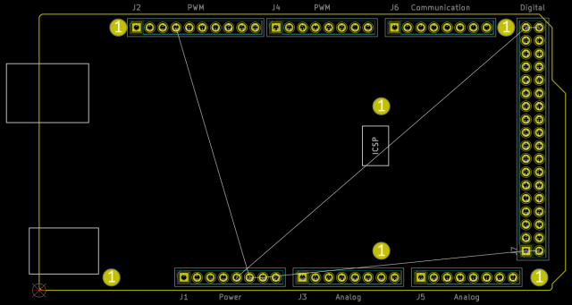

This project template is the basis of an expansion board for the Arduino Mega 2560. It includes a PCB edge matching the outline of the Arduino Mega 2560 Rev3 PCB with connectors and mounting holes placed correctly to align the two boards.
Note: due to the fact that the official 3D library does not include "long" or "stacking" female headers, the default Connector_PinSocket_2.54mm models were used.

(c) 2021 Caleb Reister
(c) 2015 Jonathan Iapicco